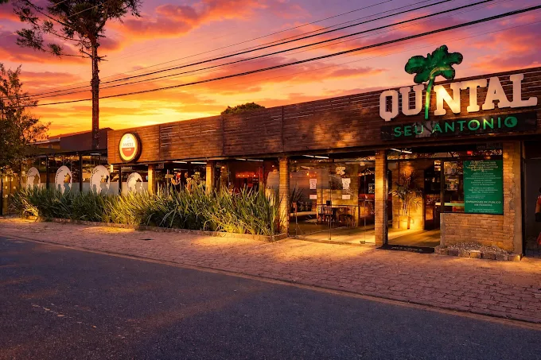
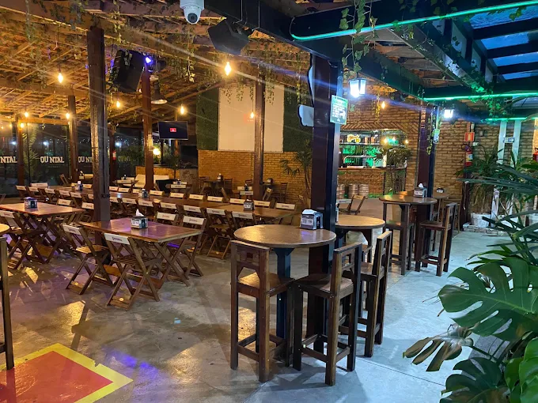
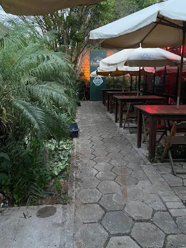
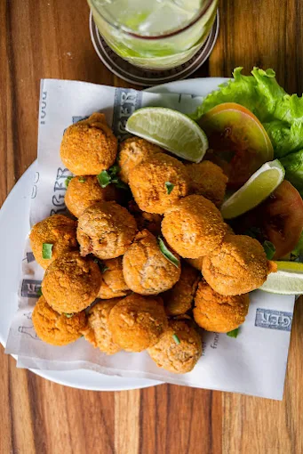
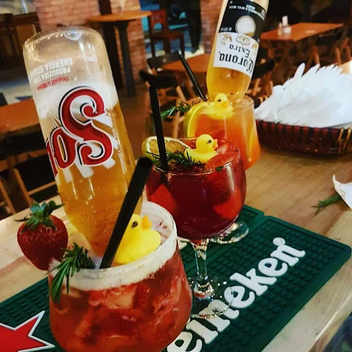
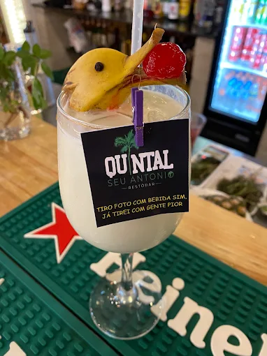

Bar e comida de boteco · Fazenda Rio Grande/PR
Comida de boteco, chope gelado e música ao vivo
Marmita farta, porção pra dividir, pizza e uma carta de bebida que vai do chope ao drink. Com banda e pagode nos dias certos — e buffet de sopa nas quintas de inverno.
4,5 no Google · 1.149 avaliações
Ticket médio R$ 20–120 por pessoa

Música ao vivo
Banda e pagode nos dias certos, com o quintal cheio.
Marmita com gosto de casa
Arroz, feijão e carne no ponto, entregue ainda quente.
Buffet de sopa no inverno
Toda quinta, enquanto o frio deixa. Quem é da casa já sabe.
O que servimos
Comida de boteco sem frescura, porção pra dividir e bebida gelada — de segunda comum a sábado de confraternização.
-
Marmitas
Fartas, temperadas como comida de vó, pra levar ou receber em casa.
-
Porções e pizza
O que se pede quando a mesa é grande e a conversa vai longe.
-
Chope e drinks
Chope gelado, drinks e a variedade que segura a noite inteira.
Salão, para viagem e delivery pelo WhatsApp.
O quintal
Ficamos na Av. Paraná, no Pioneiros. É o tipo de lugar que funciona pra tudo: confraternização de time, aniversário, ou só uma quinta-feira com sopa e música ao vivo. Ambiente agradável, limpo, e equipe que trata bem quem chega.
- Música ao vivo
- Pagode
- Marmitas
- Porções
- Pizza
- Chope e drinks
- Delivery por WhatsApp






Quem veio, contou
Nota 4,5 no Google, de 1.149 avaliações de quem já veio.
O lugar é muito legal e o povo animado, ótimas opções de comida de buteco. Nas quintas, no inverno, tem buffet de sopas que é uma delícia. Música ao vivo de qualidade, atendimento muito bom! Para confraternização ou aniversário, perfeito.
Decidi comprar marmitas para minha mulher e eu. Que satisfatório: tempero maravilhoso, arroz e feijão com gostinho de comida de vó, a carne no ponto, chegou quentinho. Obrigado pela experiência. Nota 10.
Onde estamos
Av. Paraná, 1267 – Pioneiros, Fazenda Rio Grande/PRCEP 83833-012
Horário
Horário ainda não confirmado — ligue antes de sair de casa.